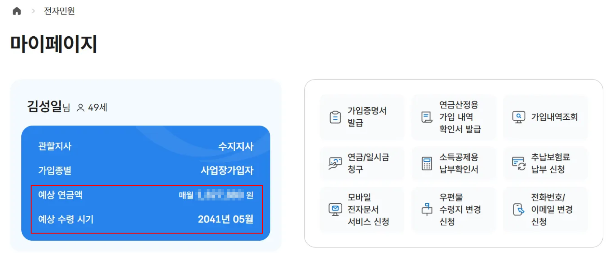
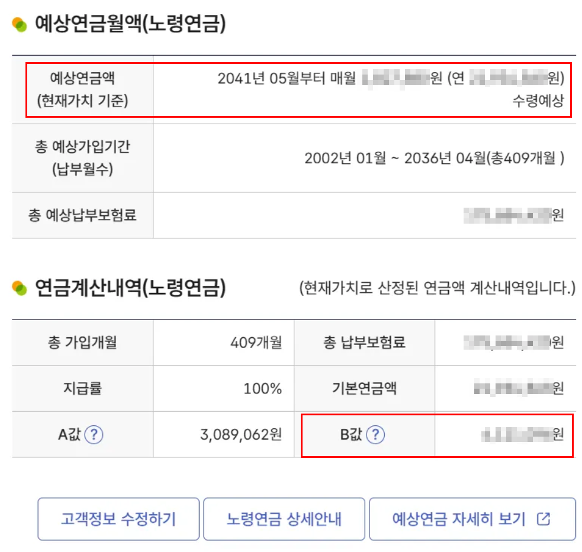
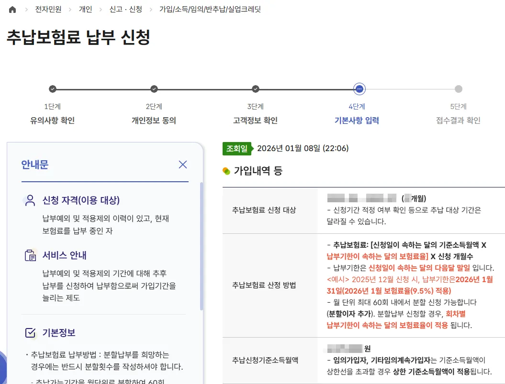
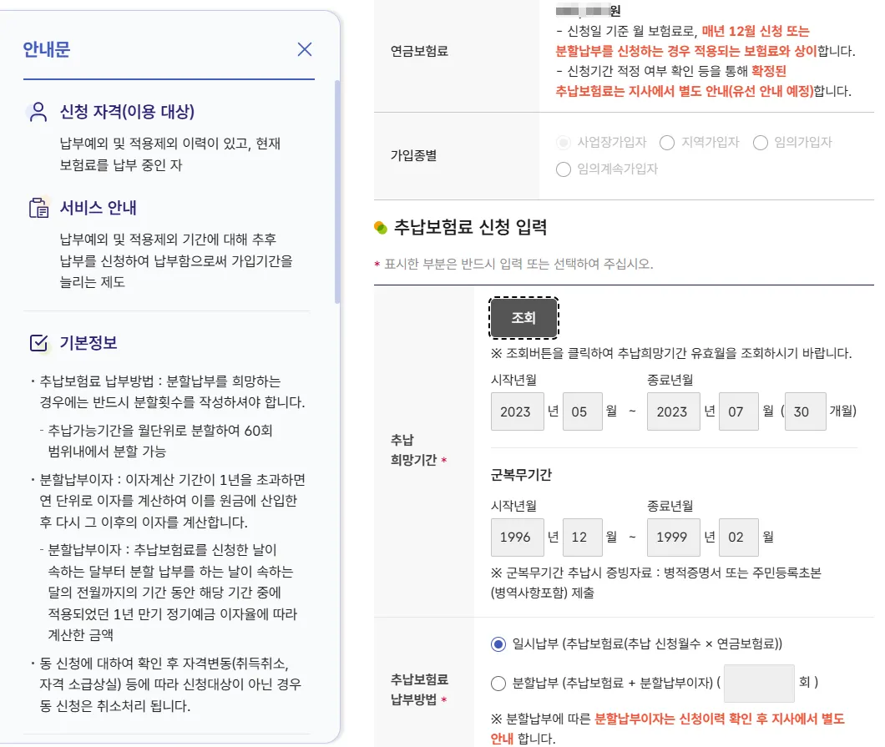
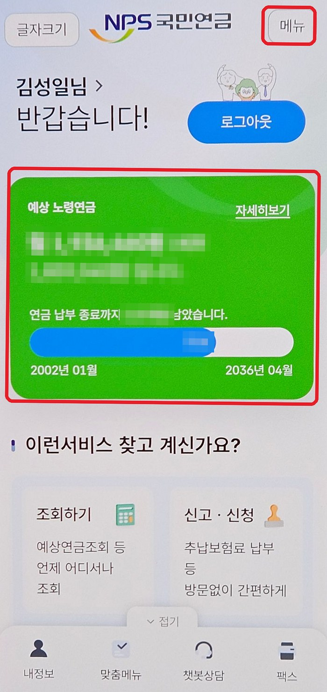
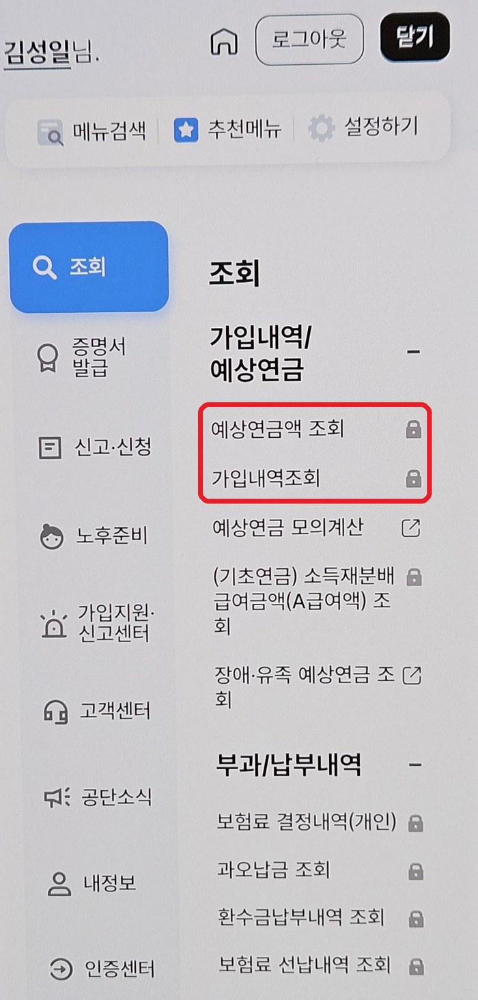
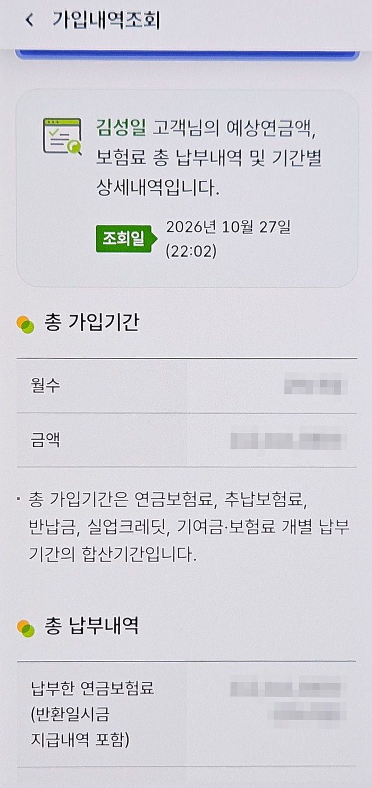
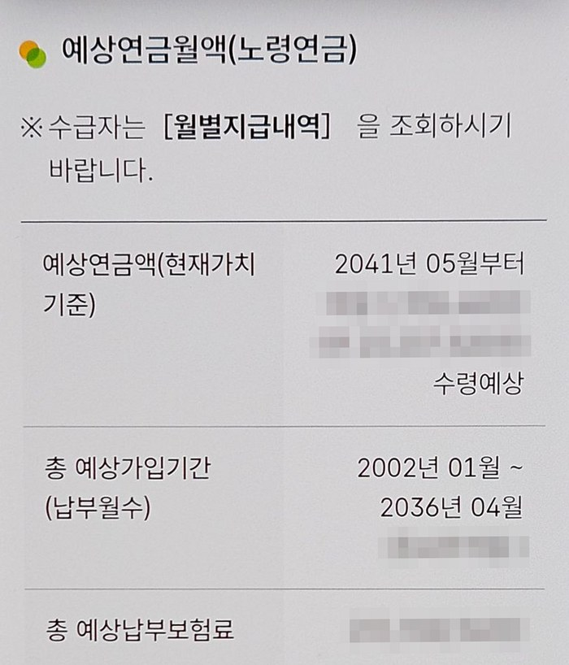
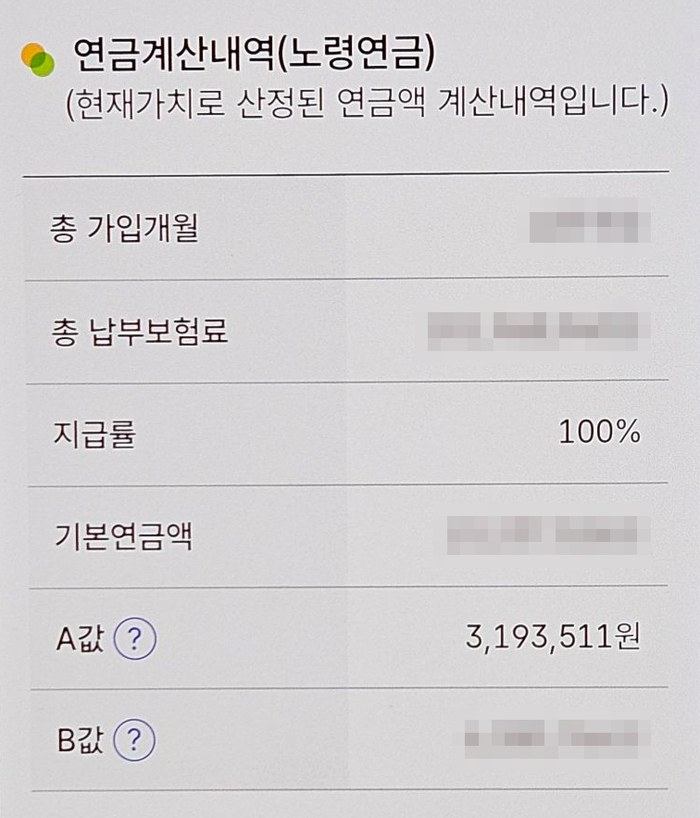

대부분이 자신의 B값(내 월급)과 가입기간 등을 모른다. 국민연금 홈페이지에 가면 다 계산해서 보여주니 금방 확인할 수 있다.
1. 검색창에서 '국민연금'을 조회하거나 https://www.nps.or.kr/ 주소로 들어가 로그인한다. (국민연금 앱 '내 곁에 국민연금'에서도 조회되며, 앱에서는 예상 노령연금 금액이 첫 화면에 바로 나온다.)
2. 로그인 후 우측 상단의 본인 이름을 선택하면 '마이페이지'가 나오며, 좌측에 '예상 연금액'과 '예상 수령 시기(만 65세가 되는 시점)'가 나온다. ('전자민원' 메뉴를 통해서도 조회 가능하다.)

마이페이지 화면 (출처: 『연금투자 무작정 따라하기』)
3. 우측의 '가입내역조회'를 선택하면 구체적인 내용이 나온다. 예상연금액이 조회되는데, 만 65세가 되는 시점부터 매월 얼마씩 나오는지 나온다. 단 이 금액에는 2가지 가정이 따라붙는다. 하나는 만 60세까지 가입해야 한다는 것이고, 다른 것은 남은 기간의 평균 월급이 B값 수준이어야 한다는 것이다.

예상연금월액 확인 화면 (출처: 『연금투자 무작정 따라하기』). 화면의 A값은 조회 당시 값이며 2026년 10월 기준 A값은 3,193,511원입니다.
— 김성일, 『연금투자 무작정 따라하기』
추납 가능 기간 조회하는 법
1. 모바일 앱(가장 간편): '내 곁에 국민연금' 앱 실행 및 로그인 ▷ 우측 상단 [메뉴] ▷ [신고·신청] ▷ [가입/소득/임의/반추납/실업크레딧] ▷ [추납보험료 납부 신청] 메뉴 선택. 실제 신청하지 않고 조회만 하고 중단하면 된다.
2. PC 홈페이지(상세 내역 확인): 국민연금공단 전자민원서비스(minwon.nps.or.kr) 접속 및 로그인 ▷ 상단 메뉴 [전자민원] ▷ [마이페이지] 탭 클릭 ▷ 우측에 [추납보험료 납부 신청] 클릭 ▷ 개인정보 동의 후 다음 단계로 넘어가면, 납부 가능한 총 개월 수와 상세 기간이 조회된다.
3. 국번 없이 1355(유료): 연결 후 상담원에게 "추납 가능한 기간이 얼마나 되는지 확인하고 싶다"고 문의하면 된다.
— 김성일, 『연금투자 무작정 따라하기』

추납보험료 납부 신청 화면 (출처: 『연금투자 무작정 따라하기』)

추납보험료 신청 – 유효월 조회 화면 (출처: 『연금투자 무작정 따라하기』)
앱에서 조회하는 법 ('내 곁에 국민연금')
앱을 열고 로그인합니다(빨간 상자의 인증 버튼).앱 첫 화면 (로그인 전)
로그인하면 첫 화면에 예상 노령연금이 바로 조회됩니다. 세전 금액과 세후 금액이 함께 나옵니다.

로그인 후 첫 화면
메뉴 ▸ 조회 ▸ 가입내역/예상연금에서 예상연금액 조회를 누르면 예상연금월액(예상 노령연금액)과 총 예상가입기간이, 가입내역조회를 누르면 총 가입기간(월수)과 금액이 나옵니다.

메뉴 ▸ 조회
가입내역조회 화면에서 총 가입기간의 월수와 금액을 확인합니다.

가입내역조회
가입내역조회 화면을 아래로 내리면 예상연금월액(노령연금)과 총 예상가입기간, 연금계산내역(총 가입개월·지급률·A값·B값)이 나옵니다.

가입내역조회 아래쪽

가입내역조회 맨 아래 (A값·B값)
계산기에는 세전 금액을 넣으세요. 공단 홈페이지의 예상연금월액도 세전 금액입니다.
계산기에 넣을 공단 조회값
아래 값은 국민연금공단 홈페이지나 '내 곁에 국민연금' 앱에서 확인할 수 있습니다. 질문마다 필요한 값만 넣으면 되고, 한 번 넣으면 이 브라우저에 저장되어 각 계산기를 열 때 같은 칸에 미리 채워집니다(서버로 보내지 않음). 부부가구면 본인과 배우자를 눌러 사람마다 따로 넣을 수 있고, 모든 계산기는 지금 고른 사람의 값으로 계산합니다(단독가구는 본인만).
가구입력 중인 사람
· 다른 브라우저나 PC에서 쓰거나 기록을 지운 뒤 다시 채우려면 파일로 저장하기로 파일(메모장으로 열 수 있는 글자 파일, 본인·배우자 값 모두)을 받아 두었다가 파일에서 불러오기로 넣으세요. 이 파일에도 내 조회값이 들어 있으니 보관에 주의하세요. · 공용 PC라면 다른 사람이 같은 PC, 같은 브라우저로 계산기를 열 때 값이 보일 수 있습니다. 지우려면 이 사람 값 지우기를 누르거나 브라우저의 "인터넷 사용 기록(쿠키 및 사이트 데이터) 삭제"를 하면 됩니다. 출생연도·출생월은 직접 넣습니다.
조회값
조회 화면
내 조회값 입력
사람별 조회값
출생연도 · 출생월
직접 입력
내 공적연금
직접 입력
지금 가입자 유형
앱: 메뉴 ▸ 가입내역조회 (현재 가입 종별)
직역연금 종류
직접 입력 (직역연금이 있을 때)
직역 예상 퇴직연금 (월)
공무원연금공단·사학연금공단 등 예상연금 조회
원
군복무 개월 (군복무 크레딧)
직접 입력
개월
제대 연도
직접 입력
년
총 가입기간(월수)
앱: 메뉴 ▸ 가입내역조회 (총 가입기간 월수) PC: 마이페이지 ▸ 가입내역조회
개월
총 납부내역
앱: 메뉴 ▸ 가입내역조회 (납부한 연금보험료)
원
그중 직장(사업장가입자) 시절 낸 금액
앱: 메뉴 ▸ 가입내역조회 ▸ 기간별 상세내역 (사업장 기간 합계) 직장 다닌 적이 없거나 모르면 비워 두세요
원
예상연금월액
앱: 메뉴 ▸ 가입내역조회 (맨 아래) ▸ 예상연금액 PC: 마이페이지 ▸ 가입내역조회
원
총 예상가입기간
앱: 메뉴 ▸ 가입내역조회 (맨 아래) PC: 마이페이지 ▸ 가입내역조회
개월
총 예상납부보험료
앱: 메뉴 ▸ 가입내역조회 (아래쪽) PC: 마이페이지 ▸ 가입내역조회
원
B값(내 월급)
앱: 메뉴 ▸ 가입내역조회 (맨 아래) PC: 마이페이지 ▸ 가입내역조회 (연금계산내역)
원
추납 가능 기간 (개월)
추납보험료 납부 신청
개월
은퇴(퇴직) 나이
직접 입력 (납부를 멈출 나이)
세
임의가입하면 낼 소득월액
직접 입력 (최소 1,013,000원)
원
지금 월 소득 (기준소득월액)
급여명세서 (세전, 비과세 제외)
원
가구 공통 본인·배우자가 함께 쓰는 값
자녀 수 (출산 크레딧)
직접 입력
명
첫째 출생(입양) 연도
직접 입력
년
둘째 출생(입양) 연도
직접 입력
년
출산 크레딧은 누구 몫?
직접 입력 (부부 합의)
A값(전체 월급)
앱: 메뉴 ▸ 가입내역조회 (맨 아래) PC: 마이페이지 ▸ 가입내역조회 (연금계산내역)
원
물가상승률 (연)
직접 입력 (기본 2.00%)
%
대안 투자 명목연수익률
직접 입력 (기본 8.00%) 받은 연금이나 보험료를 대신 굴린다면
%
내 국민연금 수익비·수익률
내는 돈(보험료)은 내 월급(B값)에 따라 달라지고, 매달 받는 돈(노령연금액)은 내 월급(B값)과 가입기간에 따라 달라집니다. 내는 돈의 총액은 가입기간에 따라 달라지고, 받는 돈의 총액은 사망 시점에 따라 또 달라집니다. 위 표에 출생연도·출생월, 총 가입기간(월수), 총 납부내역, 예상연금월액, 총 예상가입기간, 총 예상납부보험료를 넣으면 낸 돈 대비 얼마나 받는지 계산합니다.
수익비
수익비는 받은 돈(노령연금)을 낸 돈(보험료)으로 나눈 값입니다.
수익비의 문제점은 화폐의 시간가치가 무시되었다는 점입니다. 10년 내고 20년간 받은 경우와 10년 내고 10년간 받은 경우, 낸 돈과 받은 돈이 같으면 수익비는 동일합니다. 그런데 실제로는 10년간 받은 경우가 훨씬 더 유리합니다. 이 문제를 해결하는 방법은 납입기간과 수령기간을 모두 포함해 투자수익률로 환산하는 내부수익률을 계산해 보는 것입니다.
실질연수익률·명목연수익률
내부수익률(IRR)은 투자로 인한 미래 현금 유입의 현재가치와 초기 투자 비용의 현재가치가 같아지게 만드는 할인율을 말합니다. 쉽게 말해서 국민연금(보험료)을 내지 않고 직접 투자했다면 얼마의 연환산수익률이 나왔어야 하는가를 말합니다.
국민연금의 수익비나 실질연수익률이 모두에게 동일하지는 않습니다. 소득이 많은 사람은 낸 것 대비 '상대적으로' 적게 받고, 적은 사람은 많이 받도록 하는 '소득재분배'라는 사회보장 기능이 반영되기 때문입니다. 가입기간이 짧을수록 수익비나 실질연수익률이 커지는 것도 같은 이유입니다. 직장인(사업장가입자)은 회사에서 국민연금 보험료의 절반을 내주지만, 지역·임의가입자는 보험료를 전부 내기 때문에 계산 결과가 달라집니다(spouse.html 참고).
· 계산 방법: 총 납부내역은 지금까지 낸 보험료로 보고 지난 가입기간에 고르게 나눠 낸 것으로, 총 예상납부보험료와의 차이는 앞으로 총 예상가입기간이 끝날 때까지 고르게 낸다고 봅니다. 공단 조회 금액은 회사 부담분까지 합친 연금보험료이므로, 위 표의 '그중 직장 시절 낸 금액'은 절반만, 나머지(지역·임의가입)는 전액을 본인이 낸 돈으로 계산합니다(비워 두면 지난 보험료도 위 표의 '지금 가입자 유형' 비율로 계산). 앞으로 낼 보험료는 지금 가입자 유형으로 계산합니다. 지난 보험료는 물가상승률로 2026년 화폐가치로 바꿨고, 연금은 지급개시연령부터 해당 나이까지 매년 예상연금월액(2026년 화폐가치)을 받는다고 봤습니다. 명목연수익률은 실질연수익률에 물가상승률을 더해 구했고, 세전 명목 환산은 명목연수익률 ÷ (1 − 15.4%)입니다. 이직·지역가입 기간이 섞여 있거나 과거 소득이 크게 달랐다면 실제와 차이가 날 수 있습니다.